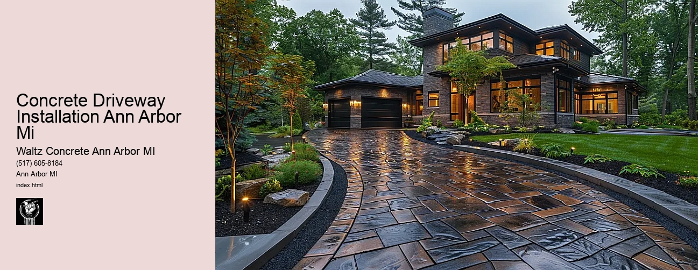

News
Concrete Driveway Installation Ann Arbor Mi
Concrete Driveway Installation Ann Arbor Mi
Choosing the right contractor for installation
Cost of concrete driveway installation in Ann Arbor
Permit requirements for driveway installation in Ann Arbor
The process and timeline of concrete driveway installation
Different types of concrete used in driveways
Maintenance and Repair of Concrete Driveways in Ann Arbor Mi
Maintenance and Repair of Concrete Driveways in Ann Arbor Mi
Preventive maintenance tips for durability
Common causes for concrete driveway damage
Professional companies offering repair services in Ann Arbor
Doityourself versus professional repairs
Costs associated with repairing a concrete driveway
Designs and Styles of Concrete Driveways in Ann Arbor Mi
Designs and Styles of Concrete Driveways in Ann Arbor Mi
Popular design trends for driveways
Considering climate factors when choosing a design or style
Unique customizations available for concrete driveways
Influence of home architecture on driveway design
Stamped stained and decorative options
Environmental Impact of Concrete Driveways in Ann Arbor Mi
Environmental Impact of Concrete Driveways in Ann Arbor Mi
Carbon footprint associated with concrete production
Use of sustainable materials in concrete driveways
Drainage considerations to reduce environmental impact
Local regulations regarding environmentally friendly driveways
Potential use of permeable or porous pavement
Alternatives to Concrete Driveways in Ann Arbor Mi
Alternatives to Concrete Driveways in Ann Arbor Mi
Asphalt driveways and their proscons
Paver stone driveways and their benefitsdrawbacks
Gravel or crushed stone as an alternative option
Comparing costs between different driveway materials
Resinbound surfaces as emerging technology
About Us
Contact Us

Concrete Driveway Installation Ann Arbor Mi
Concrete Driveway Installation Ann Arbor Mi
Concrete Driveway Installation in Ann Arbor, Michigan: A Comprehensive Guide
The city of Ann Arbor, located in the state of Michigan, is well-known for its vibrant arts scene and diverse architecture. Among the many structures that enhance the beauty of this city are homes with concrete driveways. These driveways not only add aesthetic value but also increase the functionality and durability of our homes. If you're considering a concrete driveway installation in Ann Arbor, Mi, here's what you need to know.
Firstly, why choose a concrete material for your driveway? Concrete driveways are popular because they offer excellent strength and durability. They can withstand harsh weather conditions and heavy loads without cracking or chipping. A well-installed concrete driveway can last up to 30 years or more with minimal maintenance.
Moreover, concrete driveways provide versatility in design options that other materials cannot match. They can be colored or textured to create unique aesthetics that complement your home's overall design theme. With a professional contractor at your disposal, you can customize your driveway to any shape to fit your property layout.
Now lets delve into the process of installing a concrete driveway in Ann Arbor MI. The first step involves site preparation which includes excavation and removal of any existing surface materials such as grass or gravel. Once the ground is properly prepared, wooden forms are set up to hold the concrete in place as it hardens.
Next comes pouring the concrete mix into these forms; this requires skilled handling by professionals who ensure an even spread across all areas for uniform thickness and smooth finish on top. After pouring, we have screeding leveling off excess wet concrete using a straight edge tool so every part settles evenly without bumps or hollows.
concrete driveway
.
Concrete curing follows next allowing time for it to harden under optimal temperature conditions while preventing rapid drying out that might cause cracks later on down the line (this process takes roughly 28 days). Lastly sealing protects against staining from oil leaks, tire marks, etc., and enhances its appearance.
When it comes to concrete driveway installation in Ann Arbor, MI, hiring an experienced contractor is crucial. They will understand the local climate conditions and use their knowledge to install a driveway that can withstand the Michigan weather. Moreover, they have access to quality materials and tools necessary for a successful installation.
In conclusion, installing a concrete driveway in your home in Ann Arbor MI can be an excellent investment. It enhances your home's curb appeal while providing a durable surface for your vehicles. However, proper installation is key to ensuring longevity and effectiveness of your driveway which is why hiring a professional contractor with experience in this area is recommended. With careful planning and execution, you can enjoy the benefits of your concrete driveway for many years to come.
Concrete Driveway Installation Ann Arbor Mi
Concrete Driveway Installation Ann Arbor Mi
Citations and other links
https://www.google.com/maps/dir/?api=1&origin=42.2808256,-83.7430378&destination=1298+Westport+Rd,1298+Westport+Rd,+Ann+Arbor,+MI+48103,+USA&travelmode=driving
https://www.google.com/maps/dir/?api=1&origin=42.2849685,-83.7781454&destination=1298+Westport+Rd,1298+Westport+Rd,+Ann+Arbor,+MI+48103,+USA&travelmode=driving
https://www.google.com/maps/dir/?api=1&origin=42.2851737,-83.7566026&destination=1298+Westport+Rd,1298+Westport+Rd,+Ann+Arbor,+MI+48103,+USA&travelmode=driving
https://www.google.com/maps/dir/?api=1&origin=42.2923206,-83.7813728&destination=1298+Westport+Rd,1298+Westport+Rd,+Ann+Arbor,+MI+48103,+USA&travelmode=driving
https://www.google.com/maps/dir/?api=1&origin=42.29643340000001,-83.76721830000001&destination=1298+Westport+Rd,1298+Westport+Rd,+Ann+Arbor,+MI+48103,+USA&travelmode=driving
https://www.google.com/maps/dir/?api=1&origin=42.2958584,-83.7807054&destination=1298+Westport+Rd,1298+Westport+Rd,+Ann+Arbor,+MI+48103,+USA&travelmode=driving
https://www.google.com/maps/dir/?api=1&origin=42.284873,-83.781549&destination=1298+Westport+Rd,1298+Westport+Rd,+Ann+Arbor,+MI+48103,+USA&travelmode=driving
https://www.google.com/maps/dir/?api=1&origin=42.28950919999999,-83.78120059999999&destination=1298+Westport+Rd,1298+Westport+Rd,+Ann+Arbor,+MI+48103,+USA&travelmode=driving
https://www.google.com/maps/dir/?api=1&origin=42.2871868,-83.75903249999999&destination=1298+Westport+Rd,1298+Westport+Rd,+Ann+Arbor,+MI+48103,+USA&travelmode=driving
Frequently Asked Questions
What are the steps involved in concrete driveway installation in Ann Arbor, Mi?
The process involves site preparation, form setting, pouring and leveling of concrete, finishing and curing.
How long does it take to install a concrete driveway in Ann Arbor, Mi?
Installation time can vary greatly depending on size and complexity of the project but typically it takes 1-2 days for preparation and another 1-2 days for pouring and finishing.
What is the approximate cost of installing a concrete driveway in Ann Arbor, Mi?
Costs will vary depending on factors like size and design of the driveway. However, as per current rates you might expect anywhere between $4-$8 per square foot.
Do I need a permit to install a concrete driveway in Ann Arbor, Mi?
Yes, most cities including Ann Arbor require permits for major exterior home projects such as driveways. You or your contractor should check with local building department for specific procedures.
Are there any local contractors that specialize in concrete driveway installation in Ann Arbor, Mi?
Yes there are many reputable companies known for their workmanship and professional service. Names include Superior Concrete & Design LLC; Michigan Paving & Materials Co., etc. Its advisable to ask around or do online research to find best fit for your needs.
Concrete Driveway Installation Ann Arbor Mi